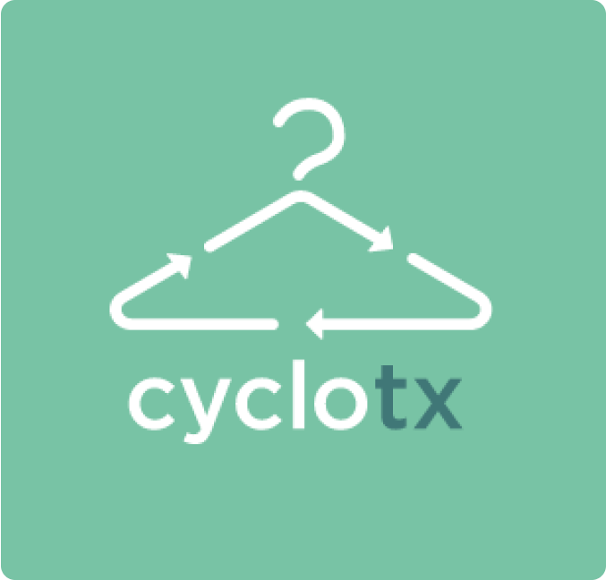

¿Quieres conocer mas acerca de los metodos de investigacion con los que trabajo? uno de ellos es el tree testing Habitualmente utilizamos el card sorting para comprender cómo son los modelos mentales de nuestros usuarios y ver cómo organizan nuestro contenido. Con este ejercicio les damos tarjetas y les pedimos que las organicen en distintos grupos —estos grupos pueden crearlos ellos mismos o podemos darlos de forma predefinida al iniciar el test—.
Cooltour
Es un proyecto que tiene como obejtivo democratizar y difundir de manera efectiva la oferta cultural de la ciudad de México asi como apoyar a galerias y artistas independientes

cyclotx
Cyclotx es una iniciativa que busca vincular ala comunidad para vender, comprar e intercambiar ropa de segunda mano de manera rapida y facil.